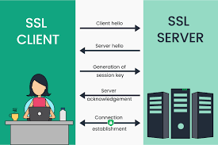

Het is een beveiligingsprotocol dat wordt gebruikt om gegevens tussen twee systemen te versleutelen

de afkorting "SSl" staat voor "Secure Sockets Layer".
Het is een beveiligingsprotocol dat wordt gebruikt om gegevens tussen twee systemen te versleutelen
Het wordt vaak gebruikt bij het beveiligen van gegevens tussen een webbrowser en een webserver.
Het versleutelt de data die doorgegeven wordt tussen twee systemen, waardoor het moeilijker wordt voor hackers om de data te onderscheppen en te lezen. Het wordt ook gebruikt om de identiteit van de webserver te verifiëren, zodat de gebruiker weet dat hij verbinding maakt met de juiste server.

Wanneer een browser eerst verbinding maakt met een website via HTTPS, stuurt de server van de website zijn SSL-certificaat naar de browser. Dit bevat de sleutel van de server die nodig is om een veilige verbinding op te zetten. De browser controleert de betrouwbaarheid van de certificaat. Als het betrouwbaar is stuurt de browser een bericht naar de server de SSL-versleutelde sessie te starten. Vanaf nu zijn alle gegevens verzonden tussen de browser en de server versleuteld wat betekent dat zelfs als de gegevens onderschept zijn zijn ze niet leesbaar zonder de bijbehorende privésleutel.